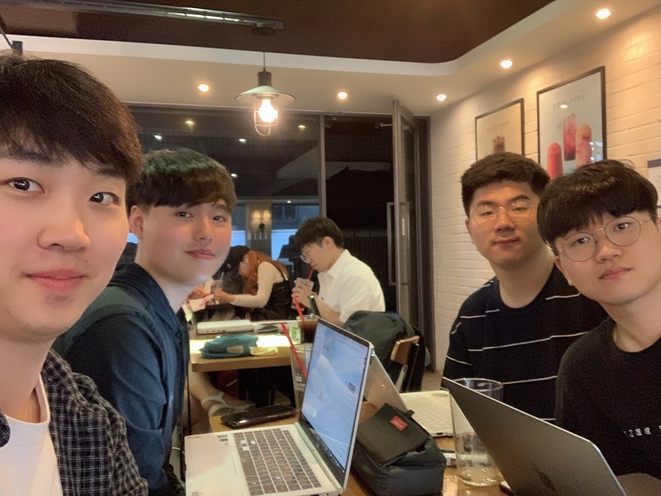

안녕하세요. 고려대학교에서 자연어 생성 프로젝트를 진행하고 있는
Deep문학도입니다.
다음은 저희 팀의 역량입니다.
- 딥러닝 모델 구현
- 영어학 전공
- 자연어 처리
- 포토샵 디자인
- 웹 크롤링
- 데이터 분석
- 데이터 베이스 관리

저희는 RNN과 SeqGAN 기술을 통해서 자연어 생성 (NLG) 프로젝트
를 진행하고 있으며, 현재 12월까지의 주제는 수능 영역 지문
제작입니다.
저희는 RNN과 SeqGAN 기술을 통해서 자연어 생성 (NLG) 프로젝트
를 진행하고 있으며, 현재 12월까지의 주제는 수능 영역 지문
제작입니다.
| 서재형(팀장) |
모델 구현 및 자연어 처리 담당 |
| 이강희 |
디자인 및 기획 전시 담당 |
| 장동환 |
데이터 분석 및 음성 처리 담당 |
| 이민형 |
데이터 전처리 및 영어학 분석 담당 |